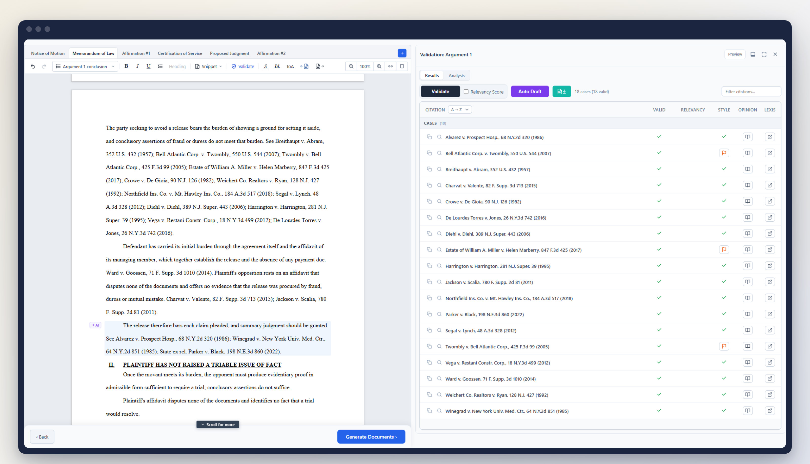
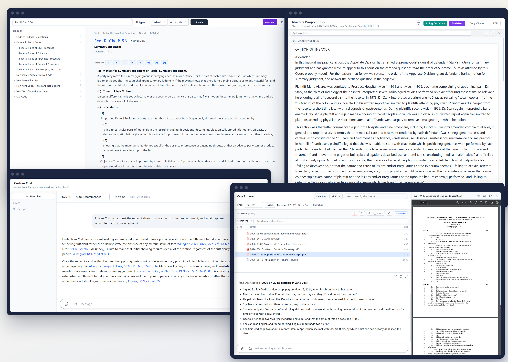
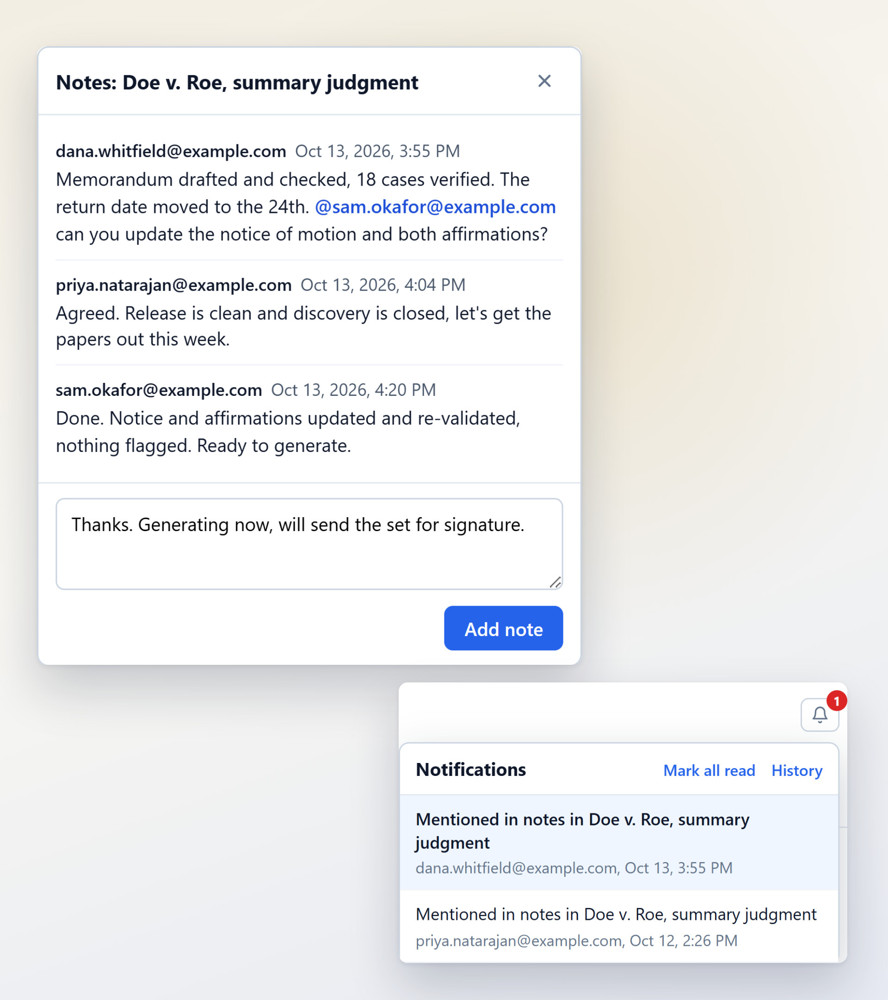

AI powered court drafting software
Court filings drafted and checked in one place. Motions, memoranda and certifications from court-ready templates, every citation verified against a full law library.

Read the statute, open the opinion, search the matter's files and ask about them. One library behind all of it.

Notes stay with the matter. Mention a colleague and it lands on their desk, not in their inbox.

Built and used daily in a New Jersey practice. Licensed per firm, with setup and training.